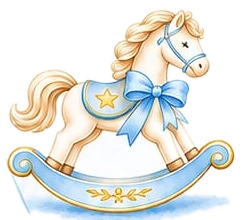

Mi bautizo
Un ángel bajó del cielo para sonreírle a la vida,
hoy lo presentamos ante Dios para sellar su fe
Sábado 28 de noviembre de 2026

Rito bautismal
Parroquia de San Miguel Arcángel
1:00 pm
Recepción
Terraza Huerta La Bendición
Brizuela 570
2:00 pm
Mis padres
Ashley Malta · Jesús Flores
Mis padrinos
Suzet Rodríguez · Juan Flores